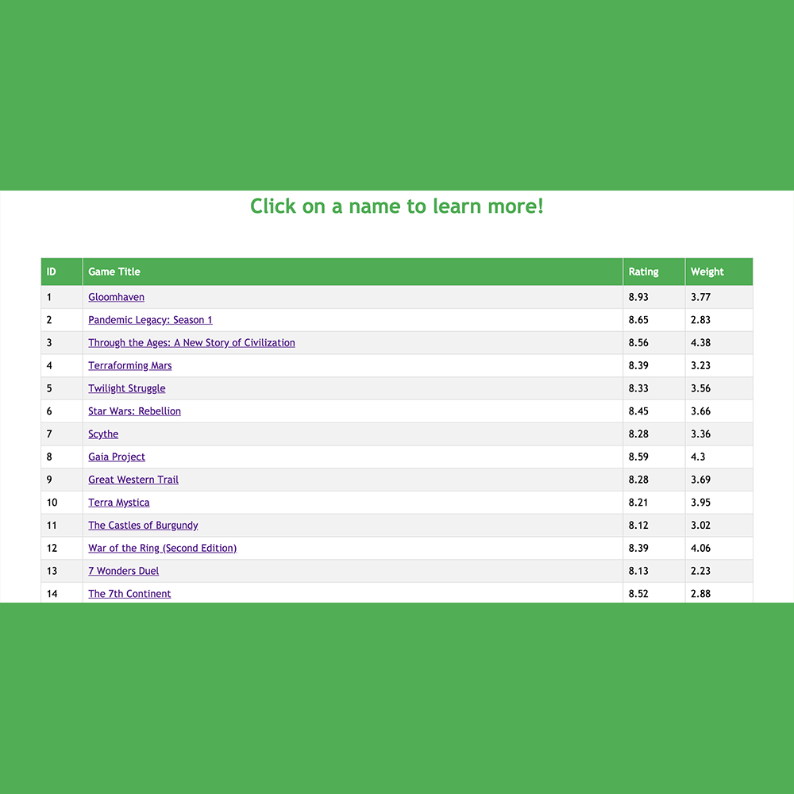
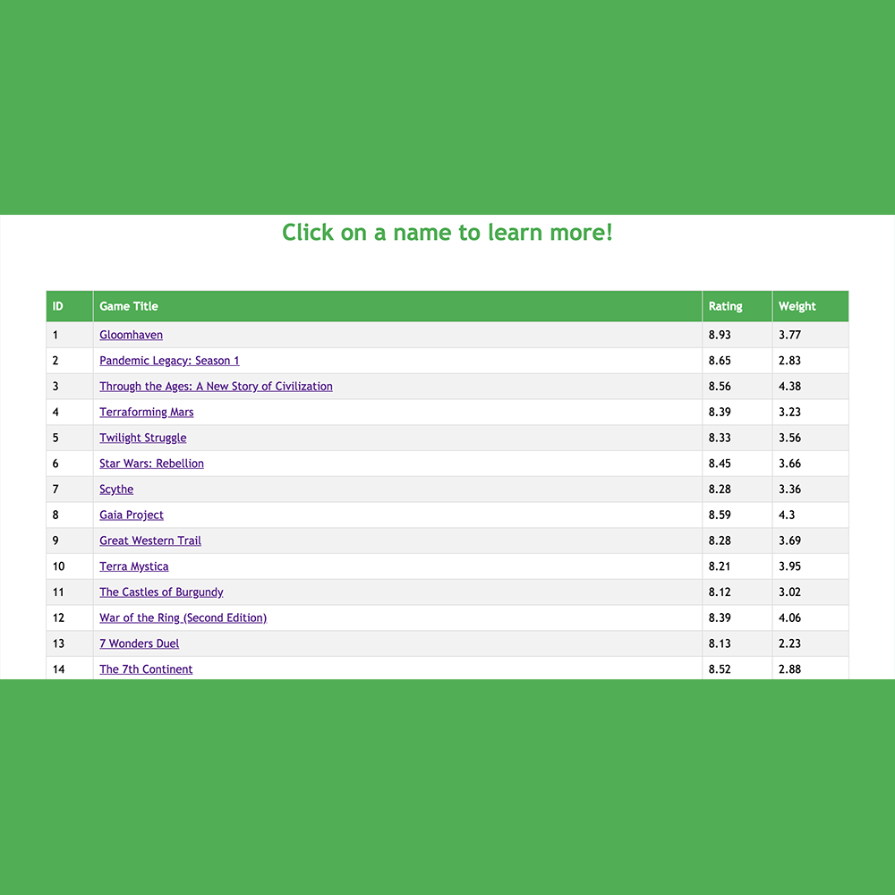
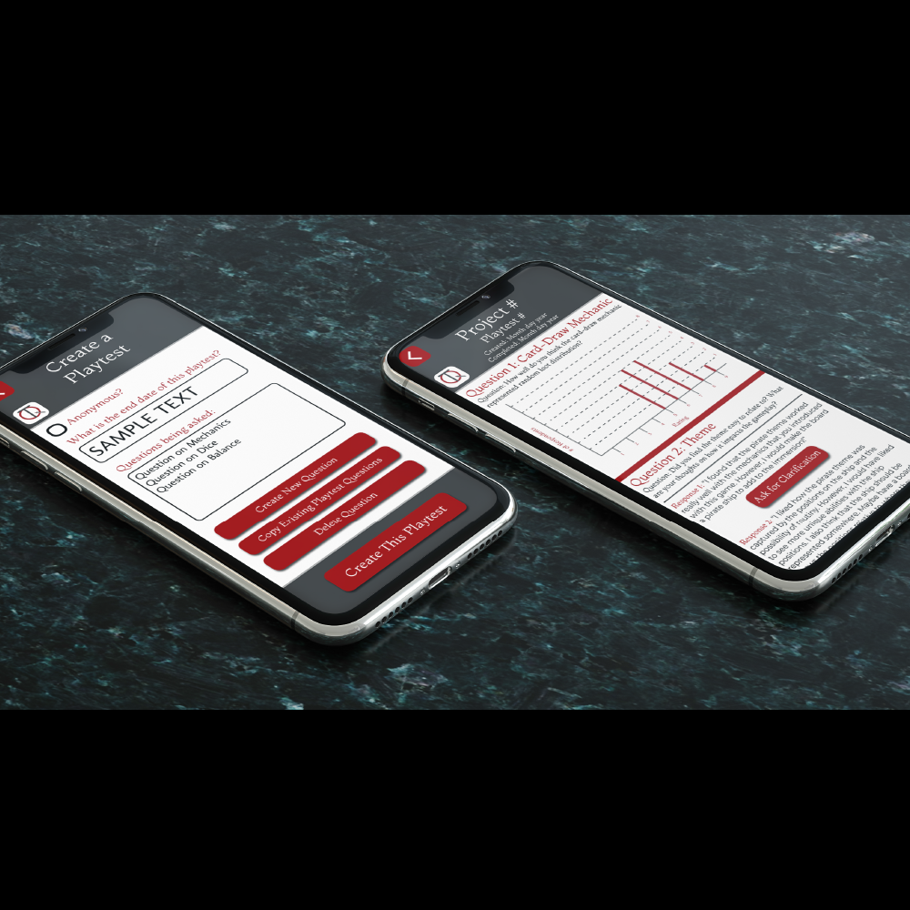
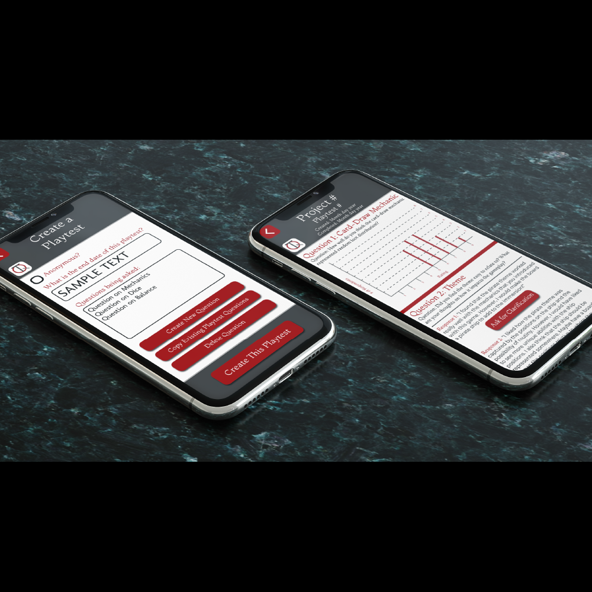

My Projects
Data Consultancy


What did I do?
I worked with a small team of students to identify how data was shared, both internally and externally, for the Society of College and University Planning. Using qualitative data anlysis and user-research methods, I condensed the results of 6 interviews to a few key takeaways.
In the end, I helped produce a report that outlined suggestions to improve data sharing practices so that they are more in line with data security protocols such as the GDPR.
What did I learn?
I learned the benefits of working with a team, deligating tasks, and time management skills in order to meet hard deadlines for various deliverables.
Freelance Statistician
What did I do?
I developed Python code in order to assess the combinatorical probability of drawing certain hands of cards for a board game in development. I furthermore developed key metrics in order to assess the game's balance. Ultimately, I produced a professional report with my recommendations on where the game needed to be improved in order to be fair.
What did I learn?
I learned how to interact with a client so that I can gather the correct information necessary for my analysis, create the tools requisite for that analysis, and produce an informative and useful deliverable at the end.
GameFinder
 

What did I do?
As a final project for a graduate Python course, I produced a web application that displays, sorts, and analyzes board game data. The data used was scraped from the boardgamegeek.com top 300 board games. I used MySQL to manage the database and Flask to create the application.
What did I learn?
I learned how to combine data-gathering tools such as web scraping with visualization tools such as Plotly and HTML to produce a full data pipeline. This was my first "full-stack" development experience.
TestQuest
 

What did I do?
I created a digital prototype of a mobile application that can be used to make the process or board game prototyping more efficient. Board game playtesters will be able to access their feedback at any time, and board game developers will be able to store feedback and production logs easily. In order to produce this prototype, I used a variety of user-research techniques, including interviews, storyboarding, user-testing, A/B tests, and others.
The full digital prototype is available for review here.
What did I learn?
I learned about user-reserch and how to apply concepts of accesibility into my designs.
Academic Research


What did I do?
I used cutting-edge computer models in order to simulate atmospheric phenomena on a number of scales, ranging from boundary-layer processes, to tornados, to climate. I wrote and defended a thesis, as well as published a referreed scientific paper.
What did I learn?
I learned how to work independently on a research problem, as well as how to learn new skills on my own quickly in order to meet the requirements of a project.